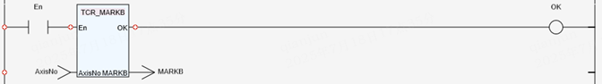

Axis Parameter.
Read the current value of axis parameter ‘MARKB’ .
|
AxisNo : UINT; |
Specify axis number. |
|
MARKB : DINT; |
0 - The registration event has not occurred -1 - The registration event has occurred <-1 - Quantity of registration events which have been logged to the TABLE |
This parameter can be polled to determine if the registration event has occurred on the second registration channel.
TCR_MARKB is reset when TC_REGIST is executed.
If the value of the input parameter ‘AxisNo’ is out of range, the value of ‘MARKB’ is 0 and the return value of ‘TCR_ErrorID’ is 19.
(DINT):=TCR_MARKB(AxisNo:= (UINT));
